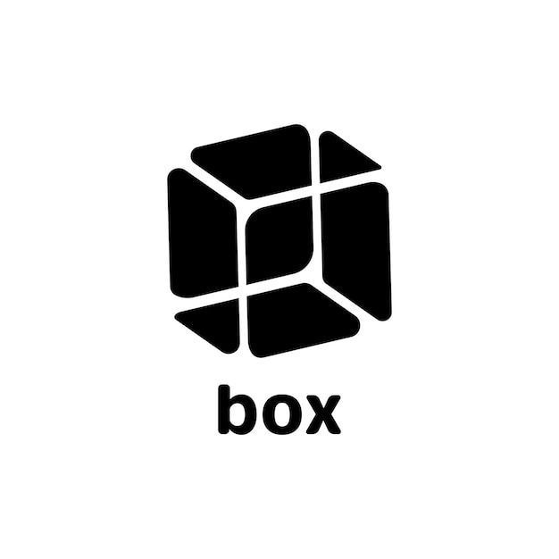

|
ГБПОУ «ПЕРМСКИЙ ПОЛИТЕХНИЧЕСКИЙ КОЛЛЕДЖ ИМ. Н.Г. СЛАВЯНОВА» Европейские критерии безопасности ИТ (ITSEC) |
 | |||||||||
| Разделы |
Класс F-C1 — базовый контроль доступаПервый (наименьший) из функциональных классов ITSEC. Требования:
Политика безопасности описывается неформально, а адекватность должна быть не ниже E1. |
|||||||||
|
||||||||||
| © 2025 Широков П. С. / ГБПОУ «ППК им. Н.Г. Славянова» | ||||||||||